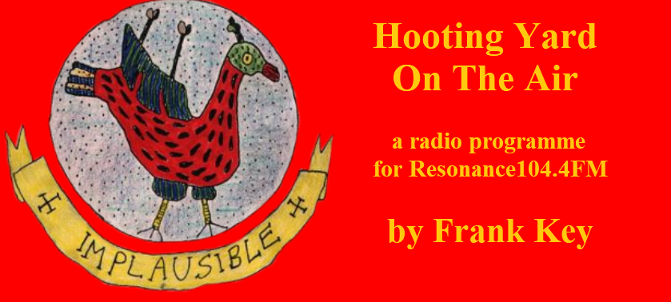

Friday, December the 15th, 2017
back to: title, date or indexes

Yesterday's episode of Hooting Yard On The Air was the final show for the Year of Our Lord MMXVII. As a special treat for listeners' ears, it included a rather marvellous rendition of The Cuthbert Spraingue Song, for which Mr Key was joined by the dulcet tones of Pansy Cradledew. Thereafter, there was a lot of babble about an ogre, and Dobson, both on an atoll and in a pickle. Plus an end note on Italian fascist Benito Mussolini.
Meanwhile, don't forget that ancient episodes of the show are being regularly added to an archive on YouTube.